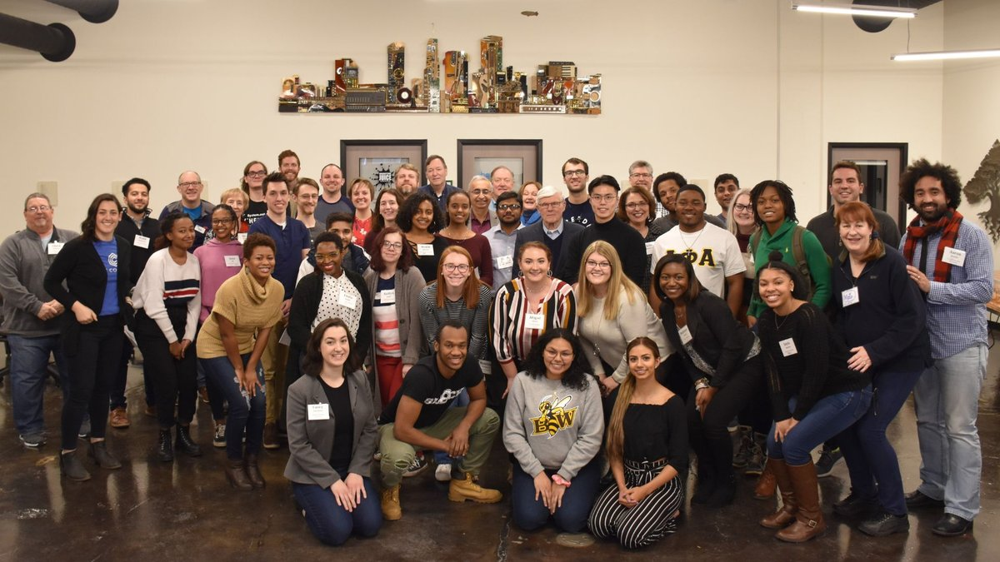
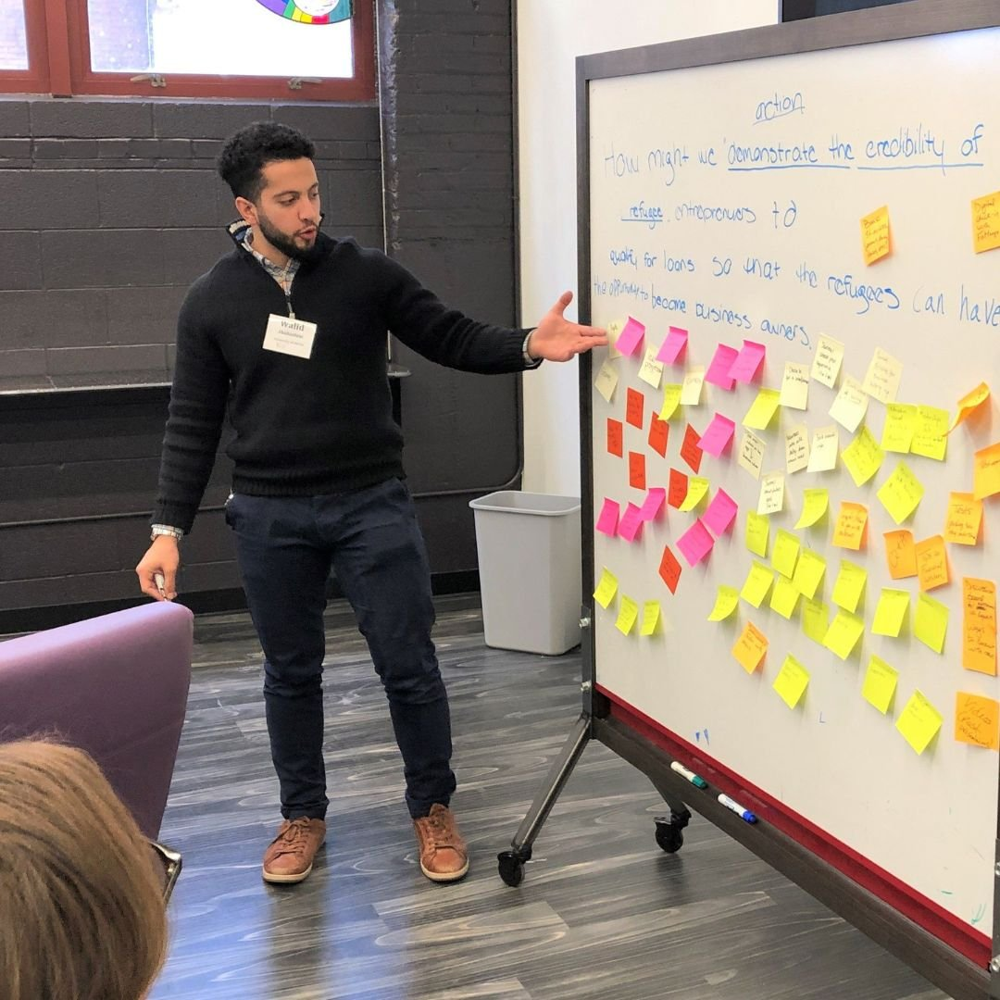
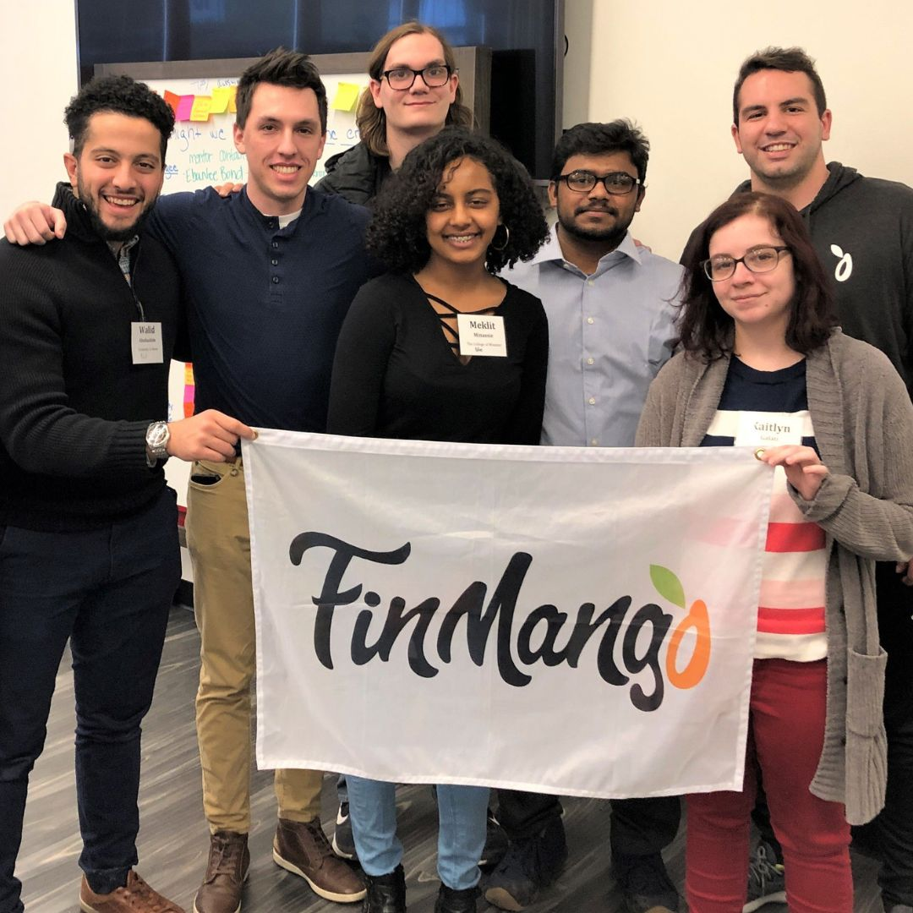
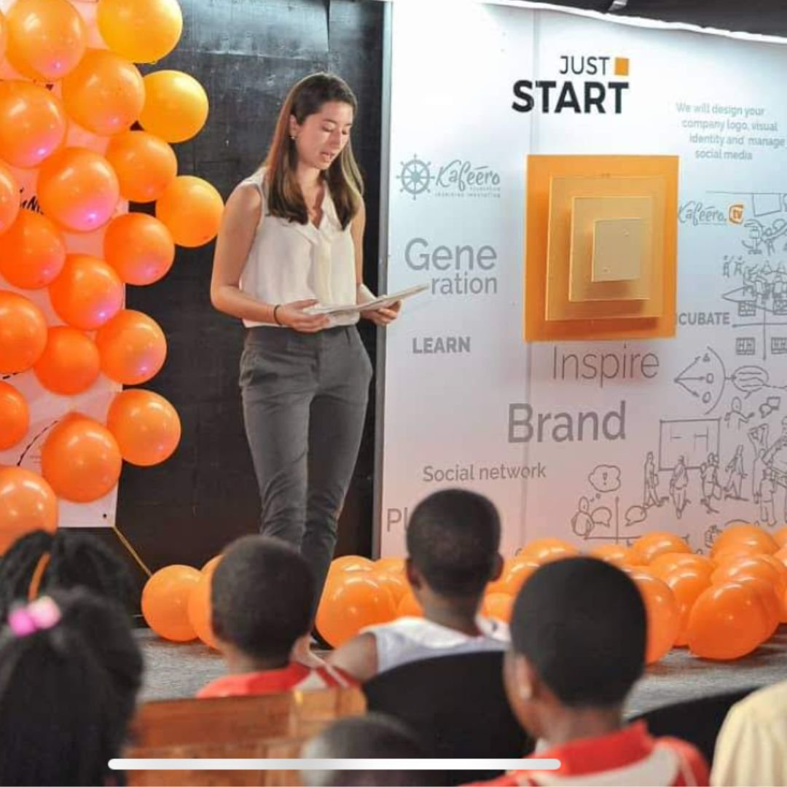
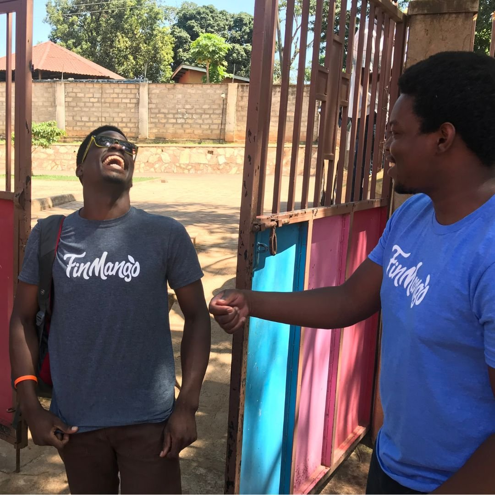
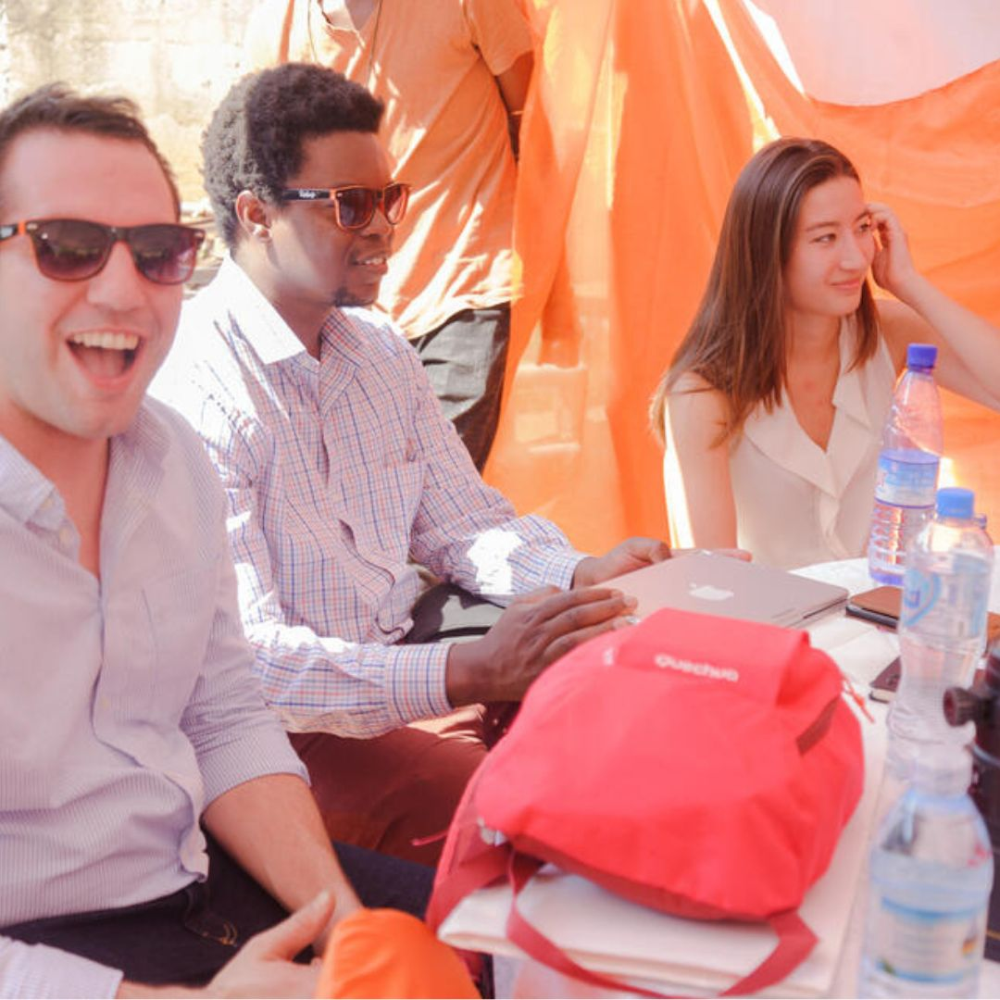
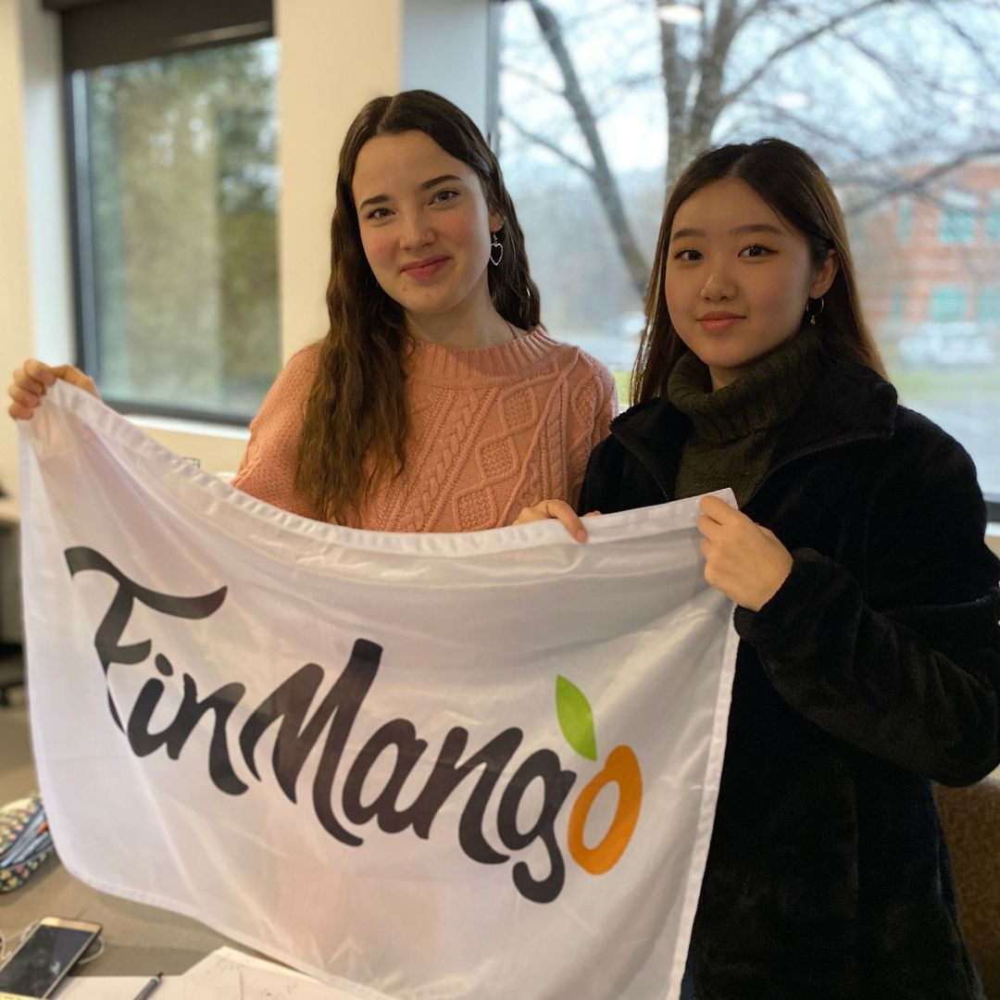
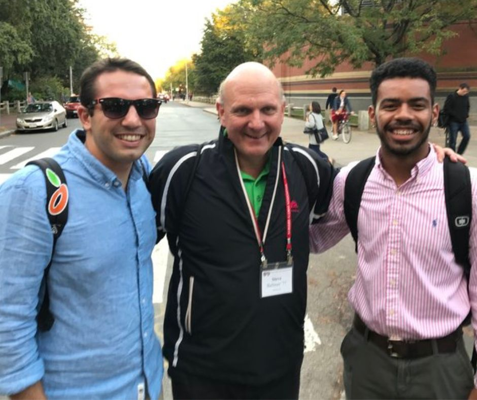

Evidence-based methods and collaborative design to create lasting change in the systems that shape financial health worldwide.

Despite real progress in recent decades, being financially included does not mean being financially healthy. Public and market systems operate sub-optimally, produce poor outcomes, and fail to provide equitable opportunity. Structural inequalities are pervasive.
In response, we work with leaders and decision-makers — in public, government, and private sectors — to help make systems more effective, inclusive, and just. Our approach draws from both experience and evidence; it evolves as we learn from our partners and practice.
We strive to address the root causes of economic inequality and transform systems to achieve equitable outcomes for millions — not through one-off programs, but through rigorous, iterative, evidence-based work done alongside the communities affected.
A six-step iterative approach built on rigorous testing, continuous learning, and evidence-based refinement.

Stakeholders and researchers come together to name the problem. We use data analysis and economic insights to narrow in on a question that can be feasibly approached.

We work with partners to diagnose the market or system failures behind the problem — using economic theory, empirical evidence, and big data to screen for causal factors.

We design interventions grounded in economic principles and evidence. Every design includes monitoring and feedback mechanisms so we learn from implementation data.

We test that solutions are financially, administratively, and politically feasible — then deliver them to beneficiaries via project partners, with smart data systems capturing progress in real time.

We test at relevant scale using scientific methods of evaluation — often randomized controlled trials — to measure impact across competing designs and find what actually works.

Lessons from each stage refine existing designs and shape new objectives. When needed, we loop back to earlier steps — the aim is a continuous cycle of improvement.
When COVID-19 hit, we saw a specific systems failure: critical public-health data was fragmented across agencies, inconsistently formatted, and inaccessible to the researchers and policymakers who needed it most. We applied the methodology to build what became the world's most extensive COVID dataset.
FinMango was founded on the understanding that money is complex, personal, and contextual — and that approaching it differently plays a critical role in supporting young adults and vulnerable communities around the world. That requires international organizations, companies, and government agencies to confront history, shape new narratives, and build new possibilities for the future.
We are a collective of engineers, designers, lawyers, artists, researchers, and professionals from every region of the globe — united by the belief that financial health is a right, not a privilege.
We disrupt the systems that endanger the financial health of young adults.
Our work aligns with this complex systems context: probing, sensing, responding. Solutions aren't imposed — they emerge from circumstances and take hold through influence. We focus on young adults during moments of transition and financial shock, because that's where the system fails them most.
